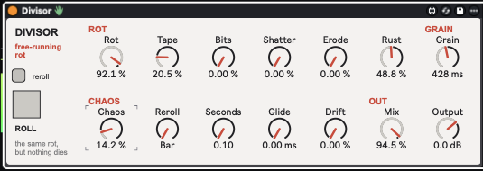

27
divisor
Remainder's rot as a free-running processor for ongoing audio: nothing dies — Rot sets how ruined the sound is, and Chaos rerolls the balance on the bar, the clock, or every hit.

about
The same five destruction processes as Remainder — Tape, Bits, Shatter, Erode, Rust — but working on the live signal instead of a dying tail. A master Rot scales them all; each has its own amount. Chaos rerolls the balance on a clock you choose (bars, seconds, transients, or the Roll button), Glide slides each new balance into place, Drift keeps everything slowly wandering. Latency-free until you use Erode. Two rows, one small box.
- type
- audio effect
- built by
- claude
- state
- v1.0
- folder
- Divisor Device
quick start
- 01Drop
Divisor.amxdon a track with something continuous. Tape starts at 30 so there is mild wear straight away; Rot 0 is clean. - 02Raise one process at a time to learn it: Bits crunches and stutters, Rust rings it through drifting inharmonic resonators, Shatter breaks it into grains, Erode hollows the spectrum.
- 03Set Chaos ~80, Reroll = Bar, Glide ~300 ms on a playing loop and listen to it reorganise itself every bar. Reroll = Transient on drums rerolls on every hit.
- 04Mix 0 is bit-exact dry; Output trims the result.
controls
rot
- Rot0 - 100
- Master: scales every process. 100 = the dials as set, 0 = clean whatever else is up.
- Tape0 - 100
- Hiss, wow and flutter, a low-pass closing from 18 kHz to 250 Hz, saturation to 8×, random dropouts. No tape-stop and no printing — there is nothing to print into on live audio.
- Bits0 - 100
- Sample rate down to 1/48 of the session rate by sample-and-hold, bit depth from 16 to about 1.5 bits, bit-flip spikes, stutter loops seizing 5–40 ms for 2–8 repeats.
- Shatter0 - 100
- Grains read from a rolling buffer of the input. At 0 it is bypassed exactly; above ~5 % the granular layer takes over the wet path, sitting about 1.5 grains behind the dry. Density falls evenly across the dial (roughly 100/65/16/3 % at 25/50/75/100) as grains shrink, gaps widen, fragments come from up to a second back and some play backwards.
- Erode0 - 100
- 1024-point spectral chain: each bin has a fixed threshold, so holes open as the level rises and close as it falls; a flickering share drops per frame; survivors smear across frames. Squared dial curve with level make-up so it hollows out rather than just getting quieter. Switched out entirely while the dial is at 0.
- Rust0 - 100
- Four inharmonic resonators (base pitch re-picked on every roll), Q rising 2 → 40, tunings random-walking up to ±30 %. The ringing layer is level-matched to the input so it never just gets quieter; the dry recedes underneath.
- Grain5 ms - 2 s
- Shatter's base grain length. Long grains push the wet path further behind the dry (about 1.5 grains).
chaos
- Chaos0 - 100
- How far each roll bends the amounts: each process ±80 %, processes left at 0 can sneak in (up to 50 %, about half the time), Grain up to 4× either way. 0 = exactly the dials.
- RerollBar / 2 / 4 / 8 Bars / Seconds / Transient / Manual
- The clock. Bar modes follow the host beat count and land on the barline (Live must be playing); Seconds runs free; Transient fires on an onset in the input with a 120 ms refractory; Manual waits for Roll.
- Seconds0.1 - 30 s
- Interval for the Seconds clock.
- Glide0 - 5 s
- Slides bent amounts into place after a roll instead of jumping.
- Drift0 - 100
- Slow random wander on every amount (±50 at full) at any Chaos setting.
- Rollbutton
- Rolls now, in every mode; flashes the light.
out
- Mix0 - 100
- Dry/wet, equal power. 0 is bit-exact dry.
- Output-24 - +12 dB
- Output trim.
push 3
encoders read left to right. slots marked “–” are intentionally empty.
workflow
bar-locked decay
Tape 30, Bits 20, Rust 20, Chaos 80, Reroll = Bar, Glide 300 ms: a loop that is never quite the same twice but always changes on the one.
hit-driven
Reroll = Transient with Glide 0 on drums: every hit lands in a fresh flavour of ruin. Raise Glide to make the changes bloom after each hit instead.
rot as a performance knob
Set the process balance you like, then map Rot to a macro or a Push encoder: one knob from clean to ruin.
gotchas
- Erode adds 43 ms of latency to the whole device while its dial is above 0 (the dry is delayed to match the FFT chain). Leaving it at 0 keeps the device latency-free; turning it up from 0 causes a one-off time jump.
- Shatter's wet path sits about 1.5 grains behind the dry — with Grain at 2 s that is ~3 s. Fine for textures, odd on rhythm.
- Bar clocks only roll while Live is playing; use Seconds or Roll when it isn't.
- Erode and Shatter never sneak in under Chaos while their dials are at 0 — those circuits are switched by the dial.
rebuilding
python3 build_divisor.py in the device folder regenerates Divisor.amxd; python3 sim_divisor.py runs the engine model (37 checks incl. the clock logic).
Engine: one main gen~ (Shatter ring → Bits → Rust → Tape, Chaos clocks, Glide, Drift) → patcher-level 1024-point fft~/ifft~ WOLA chain (Erode) → mixer gen~ (dry delay when Erode is on, equal-power Mix, Output). No external files.
Lessons: a unity-peak narrow resonator passes almost no broadband energy — level-match resonator layers; curves tuned for a dying tail collapse early on a free-running dial.